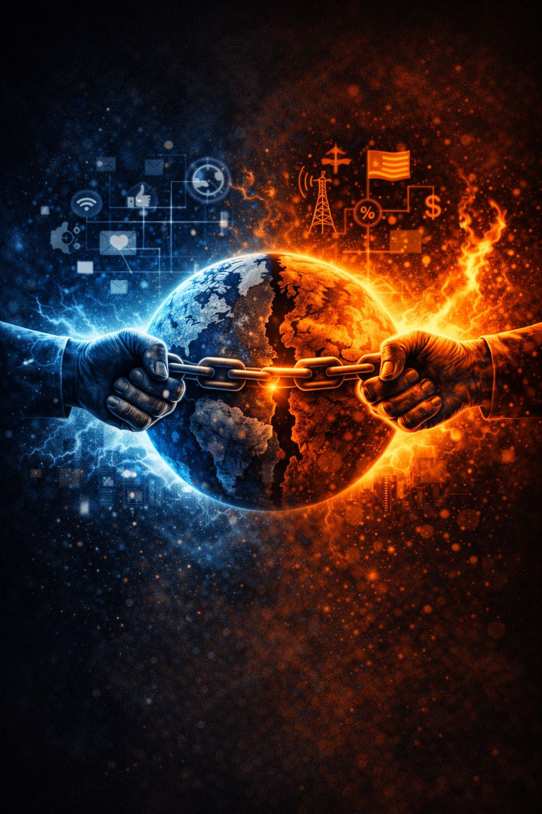

If symbolic figures are engines and the internet is fuel, people are the circuitry.
And that circuitry was shaped long before modern civilization existed.
From the outside, it is easy to dismiss followers as:
But that explanation misses the deeper mechanics entirely.
People do not become attached to symbolic identity systems because they are unintelligent.
They become attached because they are human beings operating under pressure.
Modern life overwhelms the nervous system.
Information arrives faster than any human mind can responsibly process.
Every day delivers:
Most people were never taught how to psychologically manage this level of input.
When overload intensifies, the brain searches for shortcuts:
Complexity becomes exhausting.
Meaning becomes relief.
Humans evolved in small tribal groups where isolation often meant death.
The brain still carries this ancient survival logic.
Connection and acceptance frequently matter more psychologically than detached rational analysis.
When people discover communities that offer:
…the nervous system experiences relief.
Even digital belonging can satisfy deeply primal emotional needs.
Standing with a group often feels safer than standing alone inside uncertainty.
Meaning is not optional for human beings.
People require stories that organize experience into understandable patterns.
Without coherent narrative:
Influencers and symbolic systems often provide ready-made answers:
These narratives stabilize identity during periods when older meaning systems weaken.
Even flawed stories can feel psychologically safer than emptiness.
Most people are not operating at peak cognitive clarity.
Many are:
Under prolonged stress, the brain loses energy for:
People naturally gravitate toward:
Manipulation often succeeds not because people are weak, but because they are worn down.
Once symbolic figures become tied to self-concept, loyalty bypasses ordinary reasoning processes.
The brain stops asking:
“Is this true?”
…and starts asking:
“Am I safe?”
At this stage, the symbolic figure becomes:
Loyalty functions like emotional insurance against uncertainty and insignificance.
Education alone does not eliminate vulnerability to symbolic systems.
Neither does intelligence, wealth, or status.
Because underneath ideology, all humans share:
No one is fully outside these pressures.
Many people drawn into symbolic identity systems are not malicious.
Often they are:
The tragedy is that these strengths can be redirected toward destructive allegiance when fear and meaning-seeking merge together.
The human psychological requirement for coherent stories that organize experience and identity.
An evolutionary drive toward group membership, acceptance, and social protection.
Mental strain produced by overwhelming information, uncertainty, and emotional pressure.
The more deeply we understand why people become attached to symbolic systems, the harder it becomes to dismiss them as simply foolish.
Understanding creates the possibility for de-escalation without humiliation.
People fall into these systems not because they failed as humans.
They fall into them because human psychology, under enough pressure, naturally searches for:
And symbolic systems are extremely good at offering all four.